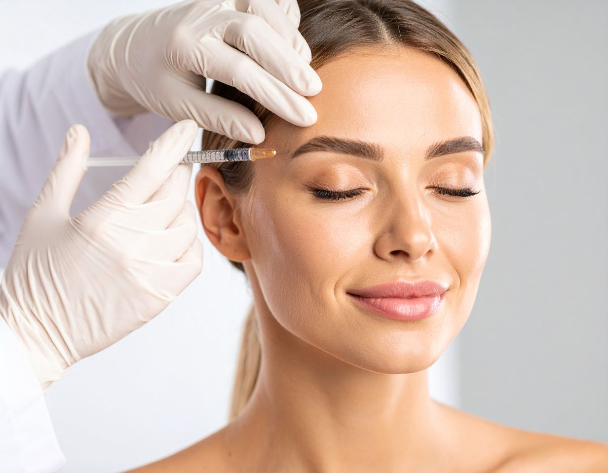
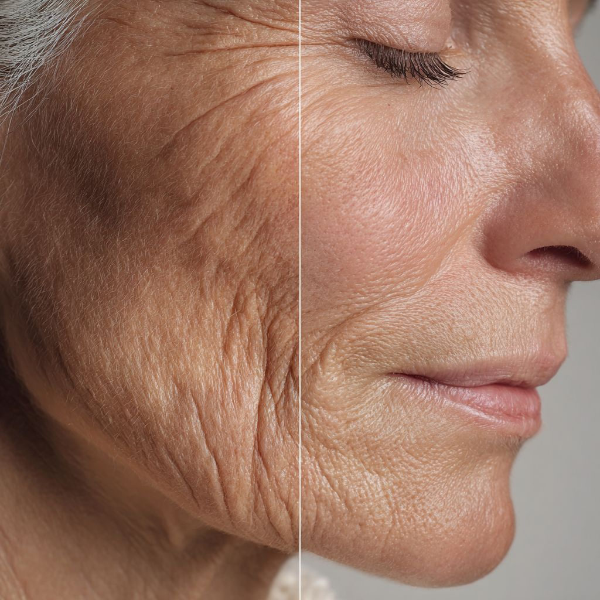
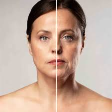
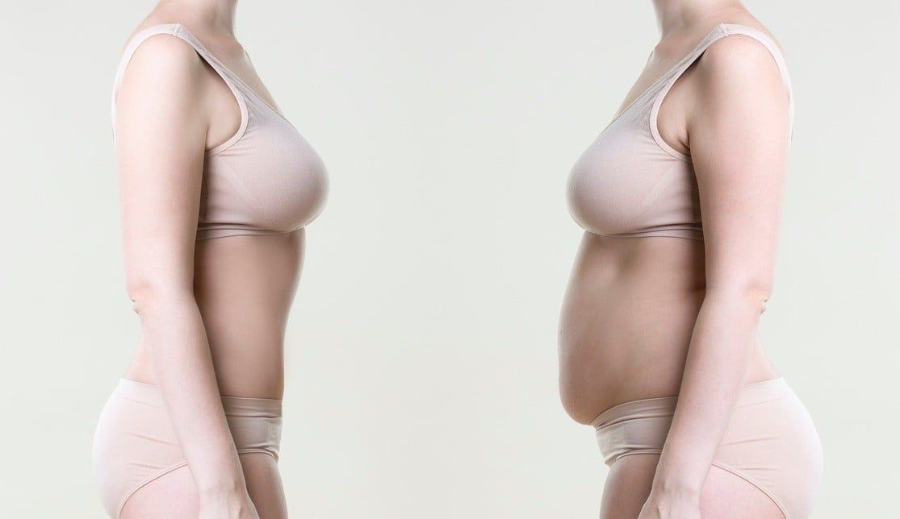
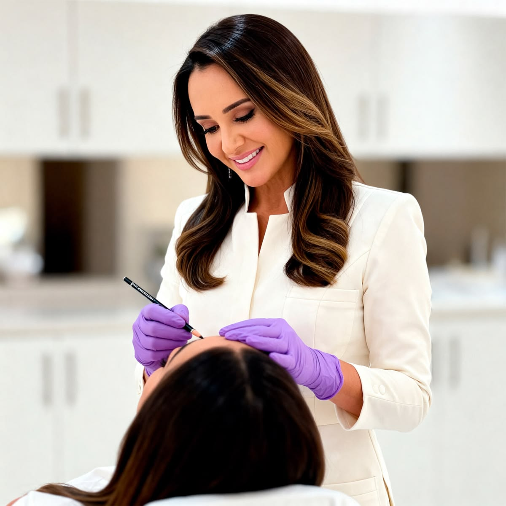
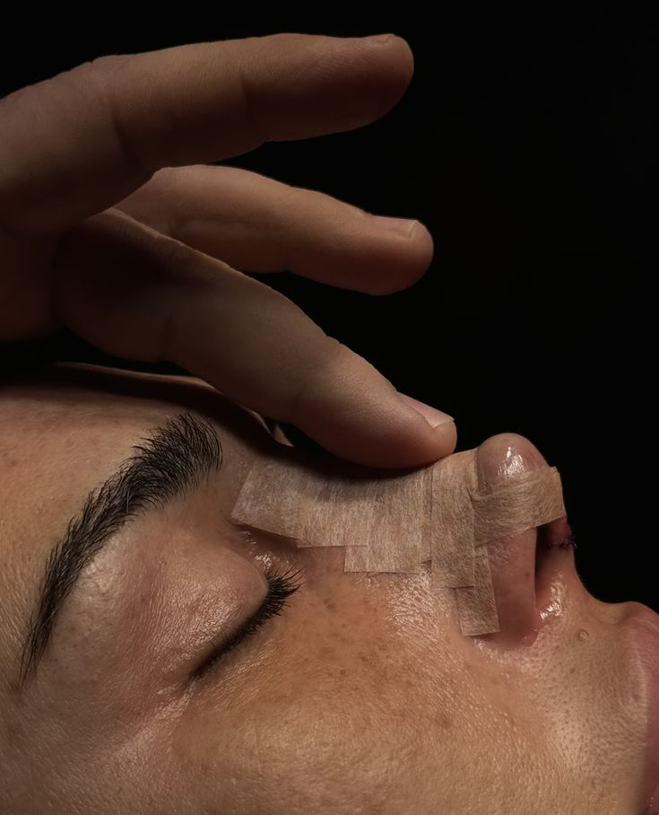
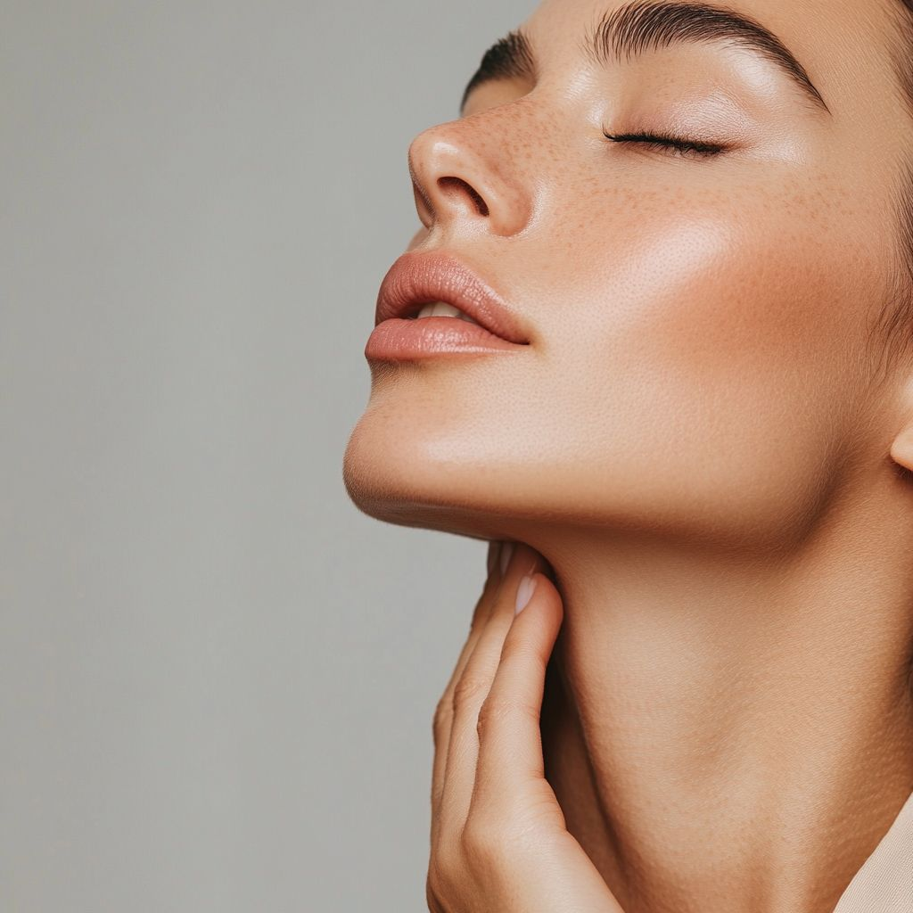
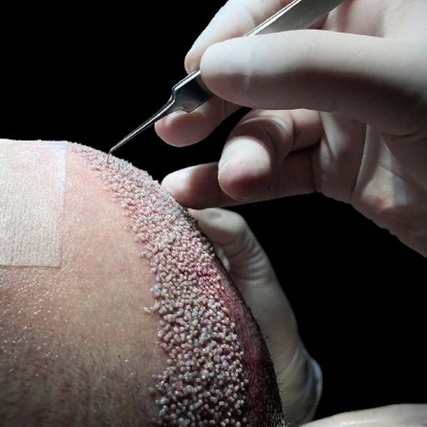

Toxina Botulínica
Suavização de rugas e linhas de expressão.
Atendimento personalizado com foco em
segurança, naturalidade e excelência.
O Instituto Dr. Alexandre Ramos é voltado ao cuidado integral do paciente, unindo Medicina clínica, cirúrgica e estética em um modelo de atendimento personalizado e altamente criterioso.
Cada indicação é feita de forma individualizada, respeitando anatomia, proporções e objetivos, sempre com foco em resultados naturais e seguros.
Mais do que procedimentos, o compromisso é com a decisão correta — porque nem sempre fazer é o melhor caminho.
Médico com ampla experiência em medicina clínica, performance e procedimentos estéticos, reconhecido pela abordagem ética, criteriosa e individualizada.
Seu trabalho é pautado pela segurança, naturalidade dos resultados e seleção cuidadosa dos pacientes.
Procedimentos voltados à harmonização facial e melhora da qualidade da pele.

Suavização de rugas e linhas de expressão.

Estimulam a produção natural de colágeno, promovendo firmeza, sustentação e rejuvenescimento da pele.

Tratamentos personalizados para melhorar a qualidade da pele, respeitando a individualidade de cada paciente.
Abordagem médica voltada à otimização da saúde, bem-estar e qualidade de vida.
Avaliação individualizada das necessidades hormonais.

Investigação completa da saúde metabólica.

Estratégia voltadas à melhora da disposição e desempenho.
Procedimentos realizados com foco em naturalidade, proporção e refinamento técnico.

Harmonização estética e funcional do nariz.

Rejuvenescimento facial com aspecto natural.

Técnicas modernas com ou sem raspagem.
Medicina com critério.
Segurança sem excessos.
Resultados naturais.
Seleção criteriosa de pacientes
Atendimento individualizado
Foco em naturalidade
Discrição e confidencialidade
Decisão médica acima do interesse comercial
"Nem todo paciente deve operar. O diferencial está em saber quando indicar - e quando recusar."
Agende sua avaliação e receba um atendimento personalizado com foco em segurança, naturalidade e excelência.
Agendar Consulta via WhatsApp